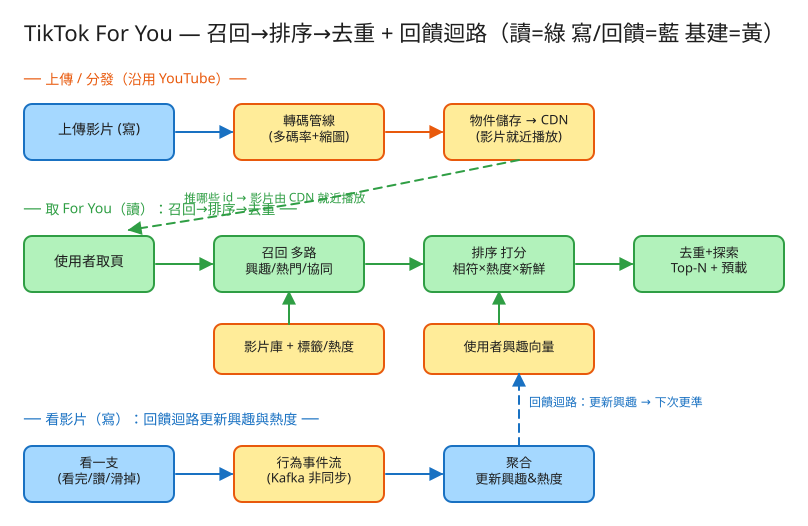

F 社交/Feed 看故事就懂 輕鬆讀 25 分鐘
你打開 TikTok，沒追蹤任何人，但一支接一支的影片就是莫名好看，一不小心滑了一小時——這就是 For You（為你推薦）。
神奇的地方是：你沒告訴它你喜歡什麼，它卻越推越準。秘密在於它偷偷觀察你的行為：哪支看完、哪支秒滑、哪支按讚，然後不斷調整下一支推什麼。
很多人第一次看這題會想：「不就是一支一支播影片嗎？」——這想法漏掉了真正難的兩件事。
第一個難關就是這個：影片多到爆，要飛快地從海量縮到一小撮，再細挑。工程上叫「召回 → 排序」兩段式。
第二個難關更隱形：你沒說過你喜歡什麼。系統只能從你的行為偷學——看完代表喜歡、秒滑代表不愛——然後邊推邊學、越推越準。這個「推 → 看你反應 → 學起來 → 推得更準」的循環，就是第二個難關（叫回饋迴路）。
💭 停一下：為什麼館員不能「把 50 億本都評分一次再挑前 10」？
別被「推薦系統」嚇到。整件事其實就是闖 4 關，一關一關來：
50 億支影片，先快速縮到幾百個「可能有興趣」的候選。這關要快、要廣，寧可多撈一點（後面還會再篩），不求精準。
👉 為什麼要「多路」（好幾區一起逛）？因為只逛一區會有盲點：只看熟食區永遠吃一樣的、只看特價區又不合你口味。多區互補才撈得廣。
推車裡有幾百樣，但今晚只煮 10 道。要幫每樣打分，挑出最高分的。
真實的 TikTok 這一步用的是 AI 模型（預測「你會不會看完」）。但骨架一樣：給候選打分、挑最高。我們的小程式用「三種分加起來」來示範，邏輯位置一模一樣。
挑好了，發之前還有兩個小心機：
影片推出去後，戲才剛開始。系統盯著你的反應：看完了？按讚了？還是 0.5 秒就滑掉？
這個「推 → 看反應 → 更新喜好 → 推得更準」轉個不停的循環，就是 回饋迴路，是整個 TikTok 的靈魂。
工程上的「取捨」聽起來很抽象。換個方式記：這個系統最怕三件事，每個設計都是為了避開某個「怕」。

✏️ 用 Excalidraw 開啟編輯（diagram.excalidraw）白話導讀，分成「上傳」「取影片」「看影片」三條路：
看完上面，這些詞你其實都已經懂了，這裡只是把「工程術語 ↔ 白話」對起來，Part 2 會用到：
| 工程術語 | 白話解釋 |
|---|---|
| For You（推薦流） | 不用你追蹤誰，系統自己猜你愛看而推的無限影片流 |
| 召回（candidate generation） | 從海量影片飛快粗篩出一小撮候選（逛幾個區把東西丟進推車） |
| 多路召回 | 同時逛好幾區：興趣區 + 熱門區 + 「同好也愛」區，互補涵蓋廣 |
| 排序（ranking） | 幫候選打分、細挑最好的（相符度 + 熱度 + 新鮮度） |
| 相符度 | 這支影片跟你口味有多合（最重要的分數） |
| 去重 | 這一輪看過的別再推（不然「怎麼又是這支」） |
| 探索 vs 利用 | 大多給你愛的（利用）＋偷渡一點新口味（探索），別困同溫層 |
| 回饋迴路 | 推 → 看你反應 → 更新喜好 → 推得更準，轉個不停 |
| 冷啟動 | 新人/新片還沒資料，怎麼開頭推（先熱門 + 探索） |
| 預載 | 先偷偷算好下一頁，你捲到底瞬間就有，不用等 |
| 轉碼 | 把上傳的影片轉成各種畫質，網路差也能順播 |
| CDN | 遍布各地的「就近倉庫」，影片從最近的送你最快 |
| 事件流 (Kafka) | 你的每個動作排成一條輸送帶，後台慢慢消化更新喜好 |
我們估幾個關鍵數字（數字不必背，重點是感受它的「形狀」）：
| 估什麼 | 大概數字 | 所以呢？ |
|---|---|---|
| 有多少人在用 | 每天 5 億人 | 取影片這條路超高頻 → 要快、要能水平擴展 |
| 有多少影片 | 累積 ~50 億支 | 不可能逐一打分 → 一定要「召回先粗篩、排序再細挑」 |
| 取一頁要多快 | < 0.1 秒 | 來不及細算 → 靠預載下一頁偷偷先算好 |
| 每天多少「行為」要消化 | 每支看/滑/讚都算一筆，數千億筆/日 | 不能即時硬算 → 走事件流後台慢慢聚合 |
💭 停一下：每天行為事件多到數千億筆，為什麼不「看一支就立刻把整套喜好重算一遍」？
這題只要記住幾張「點餐單」：
① 取一頁 For You（最常用）
GET /api/v1/feed?user_id=1&limit=10
我回：{ items:[ {影片id, 標籤, 分數, 來源:興趣/熱門/探索} ],
next_page:[ ... ] } ← 順便附上「先算好的下一頁」注意回傳裡有 next_page（預載的下一頁）和每支的 來源標記——正式產品不會給你看來源，這裡故意秀出來讓你看懂「這支是因興趣、因熱門還是探索來的」。
② 看一支影片 → 回饋（量超大）
POST /api/v1/watch
給我：{ 哪個人, 哪支影片, 動作:看完/讚/滑掉, 看了幾秒 }
我回：202（收到了！丟去後台慢慢消化，不卡你）回 202（收到、稍後處理）而不是等它算完，是因為這條量太大，必須丟事件流非同步處理，不能讓你卡在那等。
③ 上傳影片（低頻但重）
POST /api/v1/videos → 觸發轉碼（轉各種畫質）→ 完成後才能被推薦
④ 查我的喜好（除錯/個人化頁）
GET /api/v1/users/{我}/interests
我回：{ dance:3.5, music:2.0, ... } ← 系統偷學到的你的口味每支一列：影片id、標籤(分類)、熱度(多少人愛)、上架時間(算新鮮度)。
（影片本體不放這——轉碼後的檔放 CDN，這本只記「資料卡」。）
每個人一份：{ 標籤 → 分數 }，例如 { dance:3.5, music:2.0 }。
這本是系統偷學來的你的口味，每次你看完/按讚就偷偷加分（回饋迴路改的就是這本）。
記「這一輪 session 你已經看過的影片id」。取下一頁時把這些剔掉，就不會重複推同一支。
記每一筆 誰、看了哪支、動作(看完/讚/滑)、看幾秒、何時。
這本append-only（只加不改）、量超大，走事件流後台聚合，最後拿去更新「口味簿」和影片「熱度」。
| 哪裡會塞車 | 怎麼拓寬 |
|---|---|
| 挑選：50 億影片逐一打分 | 兩段式：召回先粗篩到幾百個（用「分類索引/相似搜尋」），排序只細算這幾百個 |
| 口味要即時更新，不然推不準 | 行為走事件流聚合，輕訊號近即時、重計算批次（混合） |
| 排序的 AI 模型太重、太慢 | 模型服務多機並行 + 特徵快取，且只對召回後的小候選跑 |
| 取一頁來不及 | 預載下一頁 + 提前把每人候選算好 + CDN 先把下一批影片送到邊緣 |
| 「已看簿」越記越大 | 用Bloom filter（省記憶體的近似名單）+ session 過期就清掉 |
| 熱門影片同時被超多人看 | CDN 就近送 + 多畫質自適應（沿用 YouTube 那套分發） |
「Part 1 的三個怕」是核心取捨。這裡補幾個常被面試官追問的：
讀十遍不如玩一遍。這題有一個真的可以跑的小程式，讓你親眼看到「召回 → 排序 → 去重 → 回饋」：
# 啟動（在這題的 demo 資料夾裡）
cd demo
php -S localhost:8055 -t public
# 然後瀏覽器打開 http://localhost:8055alice 一點口味（愛 dance/music），bob 則完全空白。alice 的 For You：看 dance/music 類排在前面，每支還秀出分數和來源（興趣/熱門/探索）。bob：看冷啟動——沒口味時系統怎麼靠熱門 + 探索撐起第一頁。alice 的某支「貓」影片按讚後，再取一次 For You：你會看到那支不見了（去重）、而其他貓影片分數變高、排上來了（系統學到你愛貓）——這就是回饋迴路。再看 bob：他什麼都沒看過，系統只能先推大家都愛的熱門 + 偷渡幾支探索——這就是冷啟動。玩過 demo 了，來掀開引擎蓋看看「那幾關到底是哪幾段程式做的」。 好消息：核心只有三個小檔，剛好對應前面講的工作。不用會 PHP，我把程式翻成白話、只留關鍵那幾行，看註解就懂。
第一關，從全部影片裡多路撈出候選——興趣區、熱門區、同好區，合併去重。
function 召回(使用者) {
候選 = {}
// (a) 興趣區：標籤命中我喜好的影片
for (每支影片) if (影片標籤 ∩ 我的喜好標籤) 候選 += 影片
// (b) 熱門區：全站最熱前幾支（也是冷啟動後備）
候選 += 熱度最高的前 8 支
// (c) 同好區：跟我看過的影片共享標籤的（簡化版協同）
for (每支影片) if (影片標籤 ∩ 我看過的標籤) 候選 += 影片
return 候選 // 幾百個，快、廣、可漏抓
}三區合起來＝多路召回。重點是快又廣，多撈沒關係——下一關排序會再篩。
對推車裡的候選打分：你有多愛 + 大家多愛 + 新不新鮮。
function 打分(影片, 我的喜好) {
相符度 = Σ (影片每個標籤在「我的喜好」裡的分數) // 你有多愛 ← 權重最大
熱度 = 影片.熱度 // 大家多愛 ← 小配角
新鮮度 = max(0, 1 - 影片.上架小時 / 48) // 越新越高
return 相符度×3.0 + 熱度×0.004 + 新鮮度×0.5
}
// 全部候選打完分 → 由高到低排好真實 TikTok 這段是個 AI 模型（預測你會不會看完）；我們用「三種分加權相加」示範，位置和作用一模一樣。「你有多愛」權重(3.0)壓過「熱度」，所以才會個人化，而不是一味推熱門。
排好序後，發之前做兩件事：
// 去重：本輪看過的剔掉
候選 = 候選裡「不在我的已看簿」的那些
// 取一頁：大多取高分(利用)，留 1 個名額給「我沒接觸過的標籤」(探索)
這頁 = 高分前 4 支
for (剩下的候選) if (它有我沒看過的新標籤) { 標記為探索; 這頁 += 它; break }「剔掉已看」＝去重（不會又看到同一支）；「偷渡一支新標籤」＝探索（打破同溫層、給新片機會）。大規模時「已看簿」會換成省記憶體的 Bloom filter，邏輯一樣。
這是全題的心臟。你看一支影片後，系統把它的標籤加進你的口味簿，下次就推得更準。
function 看一支(使用者, 影片, 動作) {
記進「已看簿」(使用者, 影片) // ← 下次取頁會被去重
影片.熱度 += 加成[動作] // ← 看完/讚會讓這支更熱(影響別人)
權重 = { 讚:1.0, 看完:0.6, 滑掉:0.0 }[動作] // ← 滑掉幾乎不加
if (權重 > 0)
for (影片每個標籤) 我的喜好[標籤] += 權重 // ← 偷偷學起來！
}前面講的「推 → 看反應 → 更新喜好 → 推得更準」整套就是這段。看完(0.6) 是強訊號、讚(1.0) 加碼、滑掉(0) 不加——因為「看完」比「按讚」更誠實。改的就是「口味簿」，下次召回和排序都會用到它，所以越看越準。
💭 停一下：為什麼「滑掉」的權重是 0，而不是去推一支一樣的？
| 關卡（前面講的） | 哪個檔 | 關鍵那段 |
|---|---|---|
| ① 召回（粗篩一小撮） | Recommender | 召回() 多路撈候選 |
| ② 排序（打分細挑） | Recommender | 打分() 相符度+熱度+新鮮度 |
| ③ 去重 + 探索 | Recommender | 剔已看 + 留探索名額 |
| ④ 回饋（越看越準） | FeedSession | 看一支() 加分進口味簿 |
👉 重點：真實系統會把「JSON 檔 + 迴圈過濾」換成「分片資料庫 + 相似搜尋 + AI 模型 + Kafka 事件流」， 但上面這幾段判斷邏輯（召回→排序→去重→回饋）一字都不用改。所以讀懂這個小 demo，你就讀懂了這題的核心。
先不要看答案，自己用講給朋友聽的方式回答看看（講得出來才是真的懂）：
For You = 一個會察言觀色、越來越懂你的 DJ。不用你追蹤誰，它從你的反應偷學你的口味。
4 個關卡：① 召回（從海量粗篩一小撮）→ ② 排序（打分細挑最好的）→ ③ 去重 + 探索（別重複、偷渡新口味）→ ④ 回饋（看反應、學起來、下次更準）。
3 個怕：怕慢/算不動（兩段式 + 預載）、怕越推越窄（探索）、怕冷啟動（新人新片先靠熱門 + 探索）。
工程細節一句話：50 億影片不可能逐一打分 → 召回粗篩、排序細挑；行為量太大 → 走事件流非同步更新口味；靠「回饋迴路」越看越準；影片本身交給 CDN，推薦只管「推哪一支」。
想看更精簡、面試速查用的版本？👉 前往完整版（同樣內容的工程速查格式）。